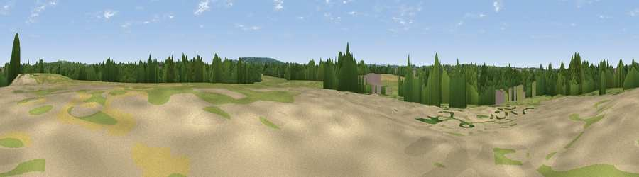

Viewpoint near Crookham Village
#45434 in England · top 82% of its area beats it · near Crookham Village · path 219 mWhere it is
The exact computed spot (SU 79527 53336). Click the marker for map links.
Public access: the nearest public right of way is about 219 m away — the final stretch may cross private land. Computed from Natural England's CRoW access layer and OpenStreetMap rights of way — not the legal definitive map. Always verify locally.
The view, rendered

A 360° render of this exact spot computed from the terrain model, tree cover and land cover — summer colours, afternoon light, calibrated against photographs of famous viewpoints. Real trees, hedges and buildings will differ in detail.
The panorama
Grey silhouette: terrain skyline in each direction (720 bearings, Earth curvature and refraction included). Dashed green: skyline with trees (+15 m) and buildings (+8 m) as obstacles. Blue strip: how far the ground is visible on each bearing.
Where the view opens
Wedge length = distance to the farthest visible ground on that bearing (vegetation-aware). Rings at 10, 25 and 50 km.
What fills the view
46% woodland · 31% grassland · 15% cropland · 7% built-up · 1% bare ground
Angular shares of the visible panorama (visual magnitude), not map area. Landscape diversity 0.54 (0–1 Shannon).
Key numbers
More beautiful places nearby
The staircase of upgrades: each row has a higher view potential than everything closer. Driving times are estimates from straight-line distance, calibrated against real road routing — check an actual route before setting out.
| Place | Direction | Drive | Score |
|---|---|---|---|
| Viewpoint near Crookham Village | SSW · 2 km | ~5 min | 15.8 |
| The Mounts | N · 2 km | ~5 min | 17.5 |
| Viewpoint near Ewshot | SSE · 4 km | ~8 min | 20.9 |
| Viewpoint near Ewshot | SE · 4 km | ~9 min | 46.4 |
| Viewpoint near Upper Hale | SE · 5 km | ~11 min | 46.8 |
| Horsedown Common | SSW · 6 km | ~13 min | 54.8 |
| Temple of the Four Winds | SSE · 21 km | ~35 min | 65.4 |
| Viewpoint near Steep | SSW · 27 km | ~43 min | 68.7 |
51.27363, -0.86133 · source: osm peak · position refined by local search. Computed location — check access rights before visiting.